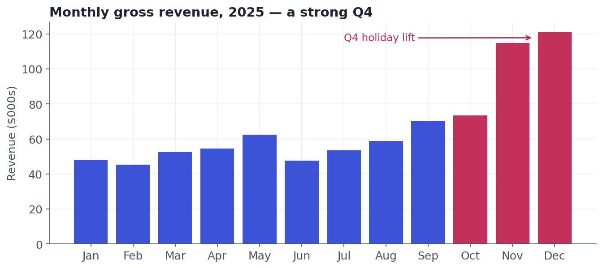
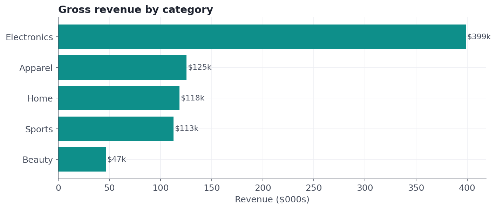
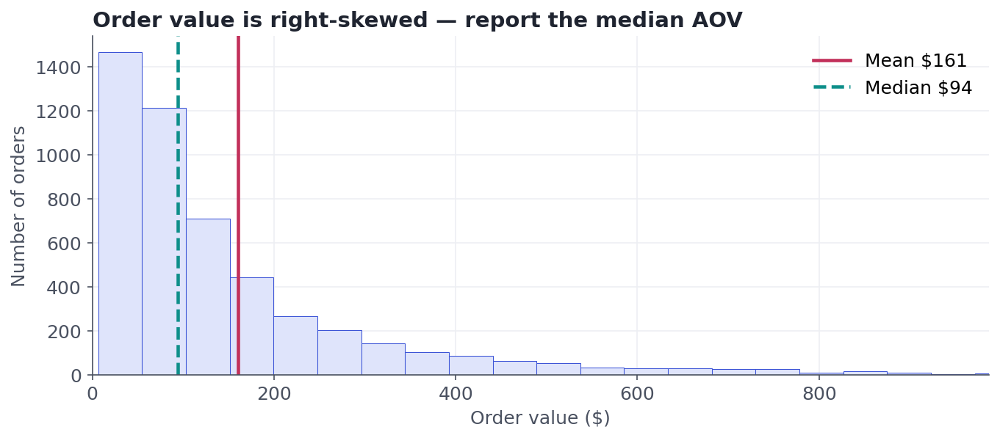
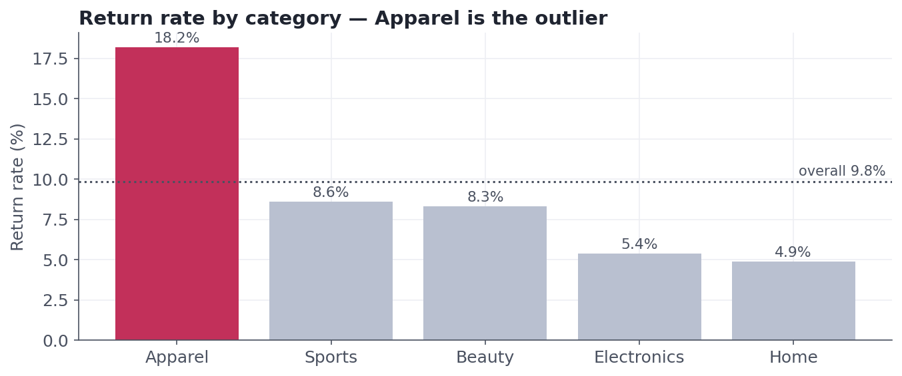
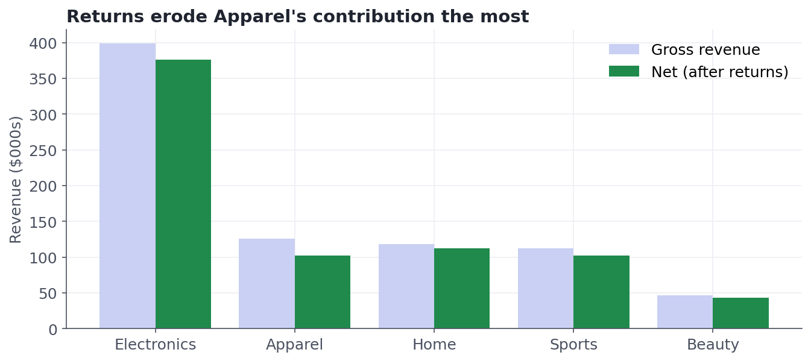

Capstone A — EDA & Insight Report
A complete exploratory analysis of a realistic e-commerce dataset, ending in a stakeholder-ready insight. Runs end to end.
This is where it all comes together. A stakeholder hands you a year of raw, messy orders and asks a simple question: where should we focus next year? Your job is to turn that spreadsheet into a defensible recommendation. We will walk the full workflow from Lesson 1.1 — load, clean, explore, visualize, decide — using everything from Track 4. Every number below is computed from real data, and the whole thing runs.
A complete EDA ending in a one-paragraph insight a manager could act on. The runnable artifacts ship with this lesson: download the Jupyter notebook and the dataset, open the notebook next to this page, and run every cell. The charts here were generated by that exact analysis.
Step 0 · know your dataThe dataset
We have one row per order from a fictional online retailer for the 2025 calendar year. Before touching it, write down what each column should be (Lesson 4.1) — it tells you which summaries will be legal later.
| Column | Meaning | Variable type |
|---|---|---|
| order_id | unique order identifier | nominal (a label) |
| order_date | date the order was placed | date / ordinal |
| customer_id | which customer | nominal (a label) |
| region | North / South / East / West | nominal |
| category | product category | nominal |
| channel | Web / Mobile / Store | nominal |
| quantity | items in the order | discrete count |
| unit_price | price per item ($) | continuous |
| discount | fraction off (0–0.2) | continuous |
| order_value | what the order was worth ($) | continuous |
| is_returned | was it returned? | categorical (boolean) |
Step 1Load and inspect
First contact with any dataset: how big is it, what types came in, and where are the holes and duplicates? Never analyze before you've looked.
import pandas as pd
df = pd.read_csv("ecommerce_orders.csv")
print("shape:", df.shape)
print(df.dtypes)
# Where are the holes and duplicate rows?
print(df.isna().sum().loc[lambda s: s > 0])
print("duplicate rows:", df.duplicated().sum())shape: (5015, 11) order_id int64 order_date object <- dates came in as text customer_id int64 region object category object channel object quantity int64 unit_price float64 discount float64 order_value float64 is_returned bool region 151 <- missing values dtype: int64 duplicate rows: 15
Three red flags already: order_date is stored as text (we'll parse it), region has 151 missing values, and there are 15 duplicate rows. Spotting these now saves you from silently wrong answers later.
Step 2Clean — make it trustworthy
Cleaning is the unglamorous 80% of the job, and every decision is a judgment call you must be able to defend. Here we make four, and say why for each.
df = df.drop_duplicates().copy() # 1. exact dupes add nothing
df["order_date"] = pd.to_datetime(df["order_date"]) # 2. text -> real dates
# 3. Remove impossible order values (<= 0, or an absurd 99999 entry error)
bad = (df.order_value <= 0) | (df.order_value >= 10000)
df = df[~bad].copy()
df["region"] = df["region"].fillna("Unknown") # 4. keep rows; label the gap
df["month"] = df.order_date.dt.month
print(f"removed {int(bad.sum())} impossible order_value rows")
print(f"clean rows: {len(df)}")removed 8 impossible order_value rows clean rows: 4992
We dropped exact duplicates and impossible values (they are errors, not signal), but we kept rows with a missing region and labelled them Unknown rather than deleting them — throwing away 151 real orders would bias the totals. Different choices change the answer, so a stakeholder is entitled to ask why you made each one. Have the reason ready.
Step 3Explore — the headline numbers
Now we aggregate (Lesson 4.2). Notice we report the median order value next to the mean, because order value is right-skewed — exactly the trap from the summary-statistics lesson.
gross = df.order_value.sum()
print(f"Gross revenue : ${gross:,.0f}")
print(f"AOV : mean ${df.order_value.mean():.2f} | median ${df.order_value.median():.2f}")
bym = df.groupby("month")["order_value"].sum()
print(f"Q4 share : {bym.loc[[10, 11, 12]].sum() / gross:.1%}")
by_cat = df.groupby("category")["order_value"].sum().sort_values(ascending=False)
print((by_cat / 1000).round(0).astype(int)) # revenue by category, $000sGross revenue : $802,017 AOV : mean $160.66 | median $94.08 Q4 share : 38.5% category Electronics 399 Apparel 125 Home 118 Sports 113 Beauty 47
Step 4Visualize — let the charts do the arguing
A table of numbers rarely changes a mind; a clear picture does. Each chart below answers one question and carries one message in its title.





Step 5 · the point of all thisInsight and recommendation
An analysis that stops at charts is unfinished. The deliverable is a decision. Here is the whole story compressed to what a busy manager needs:
Revenue is highly seasonal — Q4 alone drives 38% of the year, so we should weight inventory, staffing, and ad budget toward the holidays, especially for Electronics, which is half of all revenue. The hidden problem is Apparel: its 18% return rate (versus 10% overall) quietly erases about $23k of net revenue. Recommendation: protect Q4 supply for Electronics, and launch a focused effort to cut Apparel returns (better sizing guides, clearer photos, fit reviews). A 3–4 point drop in Apparel returns recovers more net revenue than a comparable sales lift in a low-return category — a cheaper lever than chasing new demand.
Notice the recommendation is specific, quantified, and actionable, and it names the next step: a controlled experiment (Track 6) on a sizing-guide change would prove the return-rate effect causally rather than by correlation. That is how an analysis becomes a decision.
★ Key points to remember
- A capstone is judged by its decision, not its charts — always end on an insight a stakeholder can act on.
- Inspect before you analyze: shape, dtypes, missingness, duplicates. Red flags found early are bugs avoided late.
- Every cleaning choice is defensible or it's wrong — drop errors, but keep real rows (label missing values rather than deleting them).
- Skewed money data → report the median; the mean overstates the 'typical' order (Lesson 4.2 in the wild).
- Give each chart one message in its title, and connect findings to a next step (here: an A/B test).
◆ Practice▸
Show solution & reasoning
Group by customer_id and sum order_value, then compare the top decile's total to the whole: rev = df.groupby('customer_id').order_value.sum().sort_values() and rev.tail(int(0.1*len(rev))).sum() / rev.sum(). You'll typically find a heavily right-skewed distribution where a small fraction of customers drives a large share of revenue — the same skew lesson from 1.3, and a reason to report the median customer value, not the mean.
Show solution & reasoning
Group by month and channel and look at the trend of each channel's share over 2025: df.groupby(['month','channel']).order_value.sum().unstack() then normalize each row to a share. A rising Mobile share would support the claim. Trap: a single year can't separate a real trend from seasonality or a one-off promo — and correlation with time isn't causation. State the uncertainty, and propose a longer window or an experiment before declaring a takeover.
◎ Deep dive: drop, impute, or flag? Handling missing data honestly▸
The three honest ways to handle missing data. When a value is absent you have three defensible moves, and the right one depends on why it's missing:
- Drop the row — only safe when missingness is rare and unrelated to what you're measuring, or the row is unusable. Risky because it can bias results if the missing rows differ systematically.
- Impute — fill with a sensible estimate (median for numbers, most-common for categories, or a model). Keeps sample size but invents data, so it can understate uncertainty.
- Flag — keep the row and mark the gap (our
Unknown). Honest and non-destructive; ideal when 'missing' might itself be informative.
We flagged because region was missing for only ~3% of orders and those orders are otherwise valid. We dropped the impossible order_value rows because a negative or 99999 price isn't missing — it's an error with no recoverable truth. The discipline: match the remedy to the cause, and write down what you did so the analysis is reproducible and defensible.
Download the notebook and the dataset, run every cell, and then say the insight paragraph out loud as if a manager were across the table. If you can explain each cleaning choice and connect the charts to the recommendation, you've passed the real test of this course: could you run this analysis and defend it to a stakeholder?